Organizing Committee
General Chairs
-
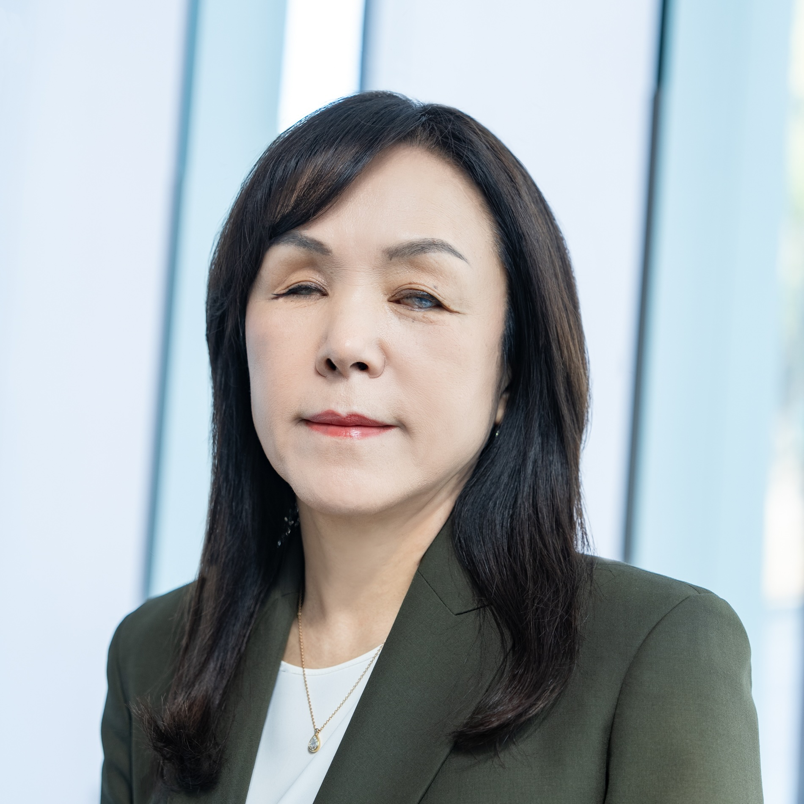
Chieko Asakawa Miraikan and Keio University -
João Guerreiro Universidade de Lisboa
Program Chairs
-
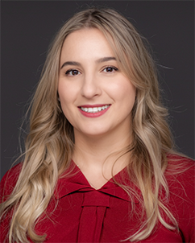
Hernisa Kacorri University of Maryland, College Park -
 Kim Marriott Monash University
Kim Marriott Monash University -
Kotaro Hara Singapore Management University
Past/Transition Program Chair
-
 Stacy Branham University of California, Irvine
Stacy Branham University of California, Irvine
Registration Chair
-
Dragan Ahmetovic University of Milan
Proceedings Chair
-
David Gonçalves Universidade de Lisboa
Local Arrangements Chairs
-
Ayaka Tsutsui University of Tsukuba
-
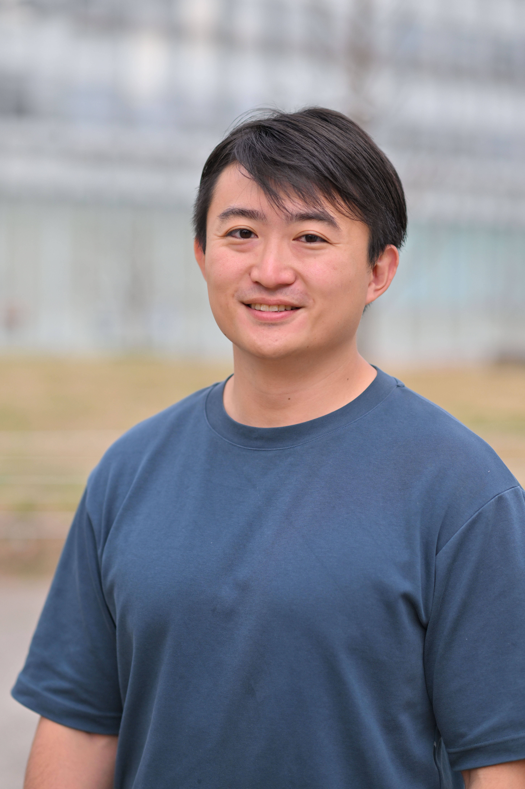
Masaki Kuribayashi Woven by Toyota
Posters and Demos Chair
-
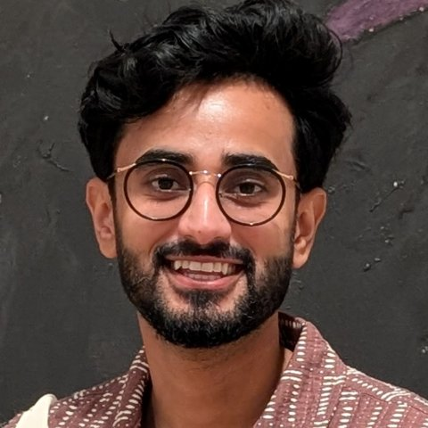
Saad Hassan Tulane University
Workshop Chair
-
 Sergio Mascetti University of Milan
Sergio Mascetti University of Milan
Web Chairs
-
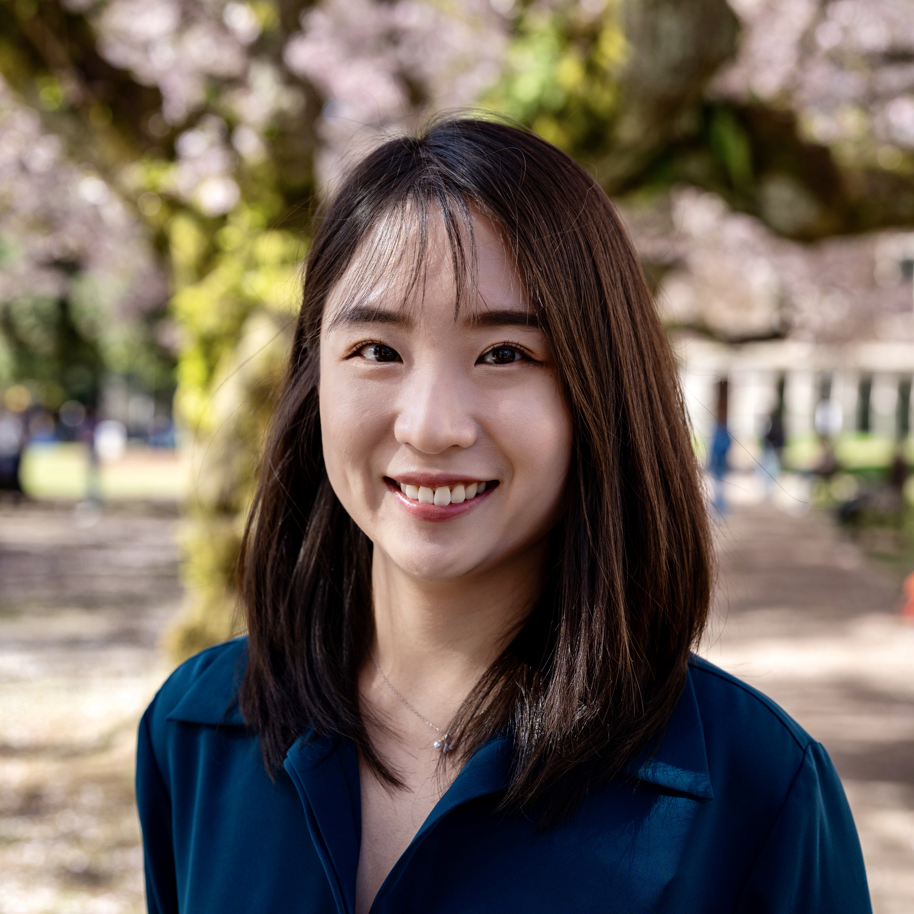
Chu Li University of Washington -
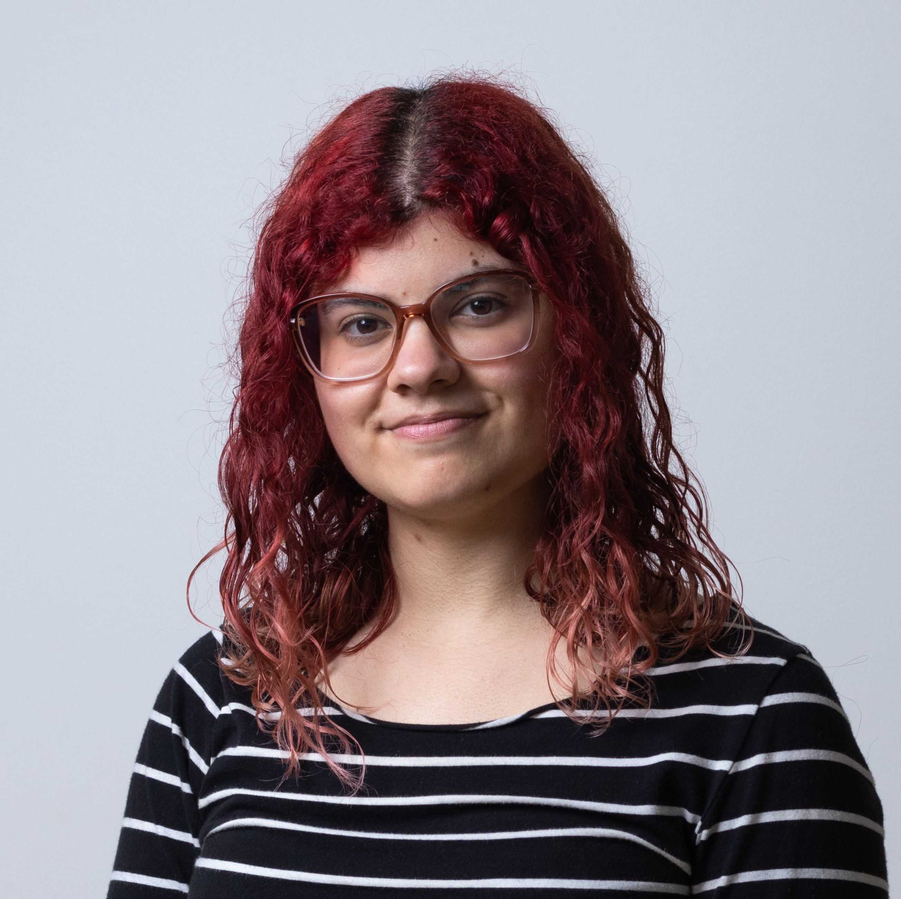
Inês Gil Universidade de Lisboa
Hybrid Chairs
-
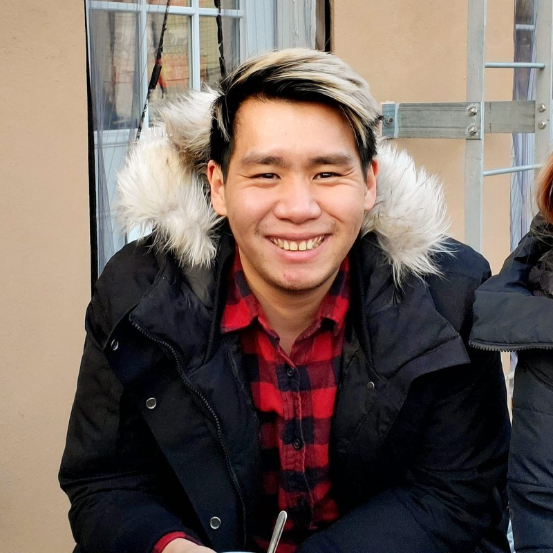
Leon Lu University of Toronto Mississauga -
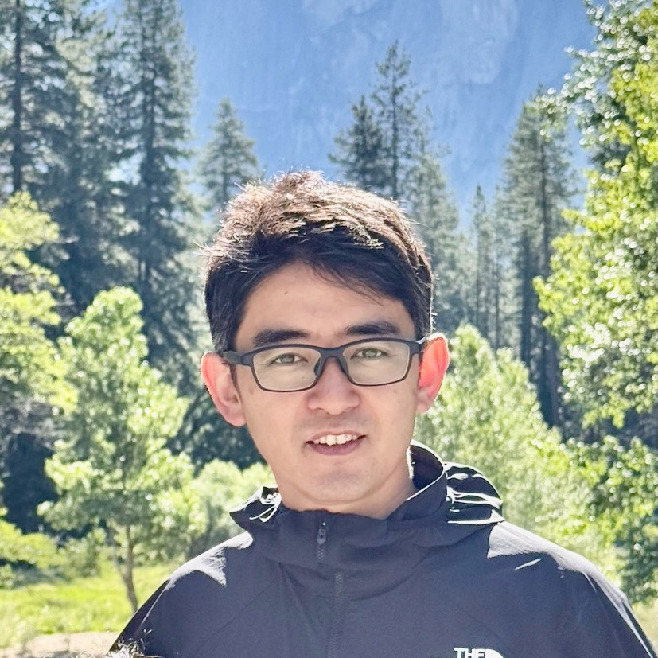
Daisuke Sato Keio University
Doctoral Consortium Chairs
-
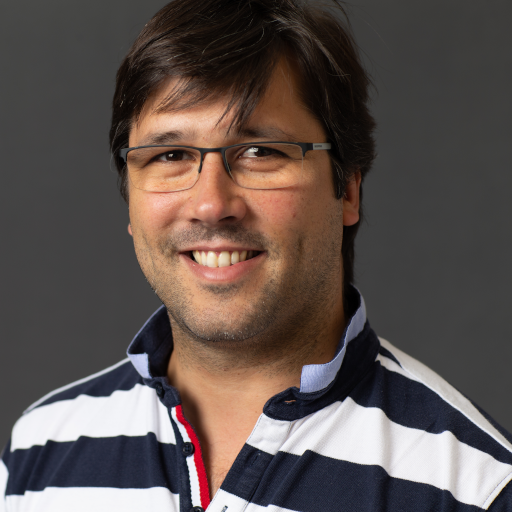
Tiago Guerreiro Universidade de Lisboa -
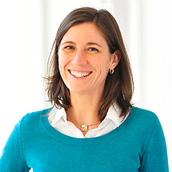
Leah Findlater University of Washington
Student Research Competition Chair
-
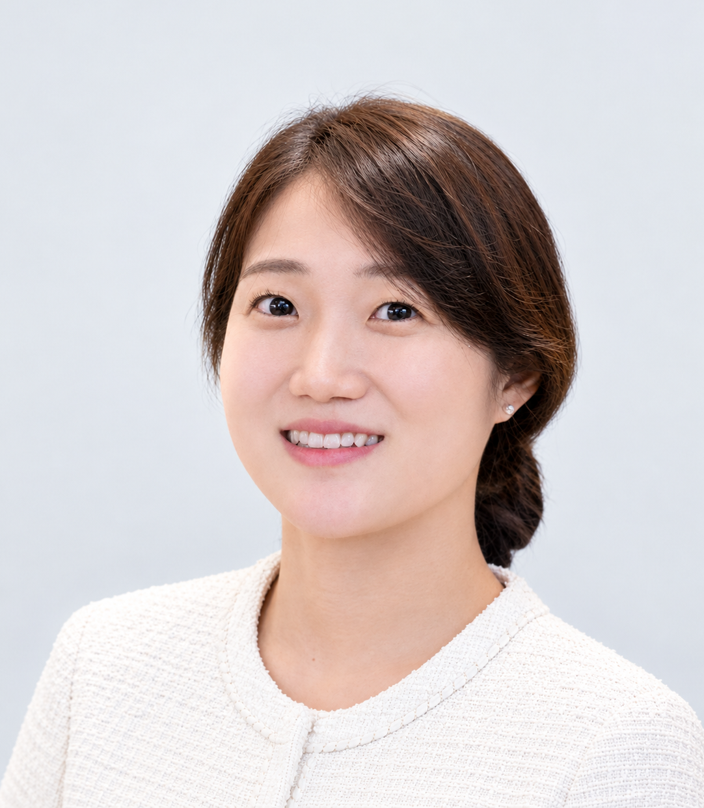
Uran Oh Ewha Womans University
Accessibility Chairs
-
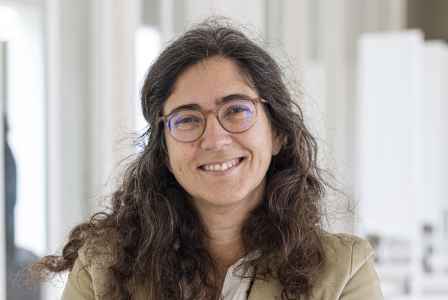
Isabel Neto Universidade de Lisboa -
 Zeynep Yildiz Karlsruhe Institute of Technology
Zeynep Yildiz Karlsruhe Institute of Technology -
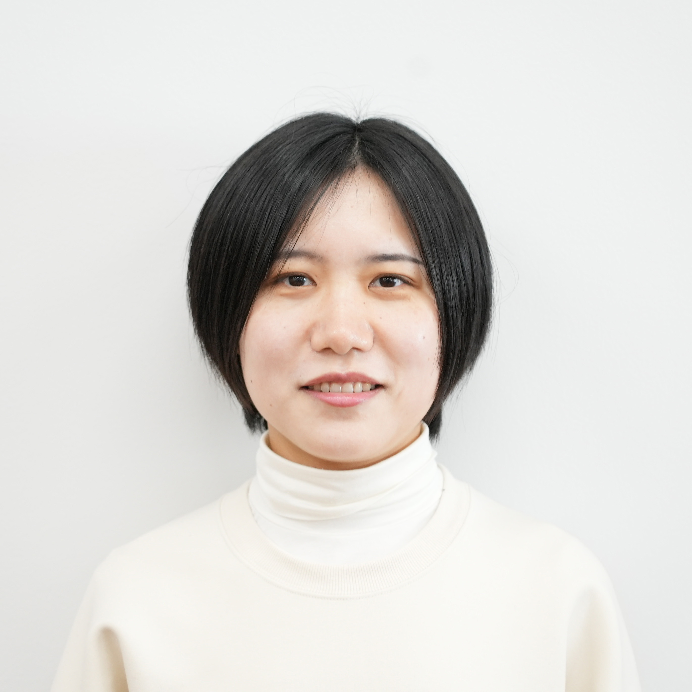
Xiyue Wang Tohoku University and Miraikan
Mentoring Chair
-
 Christian Vogler Gallaudet University
Christian Vogler Gallaudet University
Student Volunteer Chair
-
Kengo Tanaka University of Tsukuba
Experience Reports Chairs
-
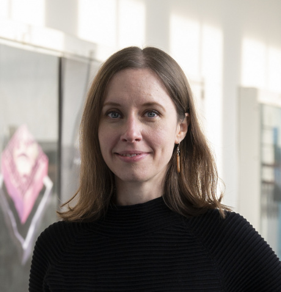
Kathrin Gerling Karlsruhe Institute of Technology -
Franklin Mingzhe Li University of North Carolina at Chapel Hill
Sponsorship Chairs
-
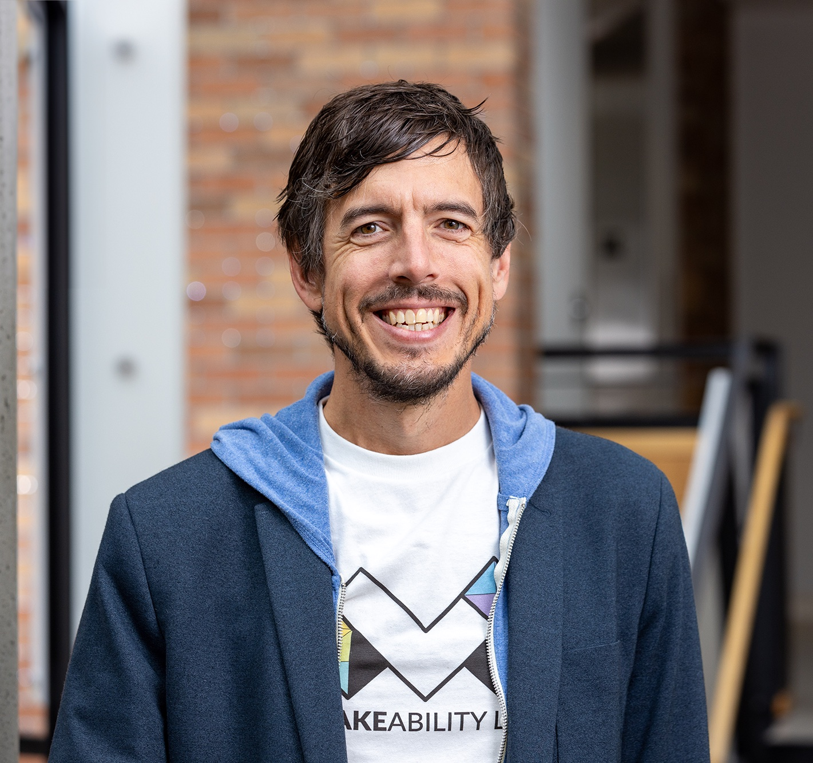
Jon Froehlich University of Washington -
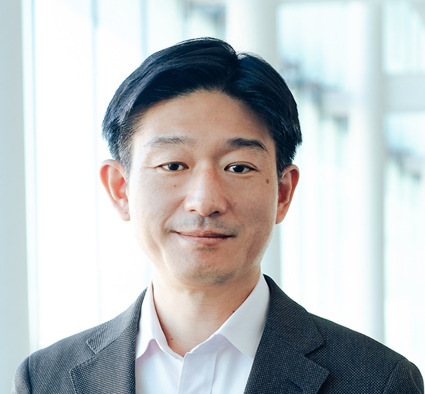
Hironobu Takagi Miraikan and Keio University